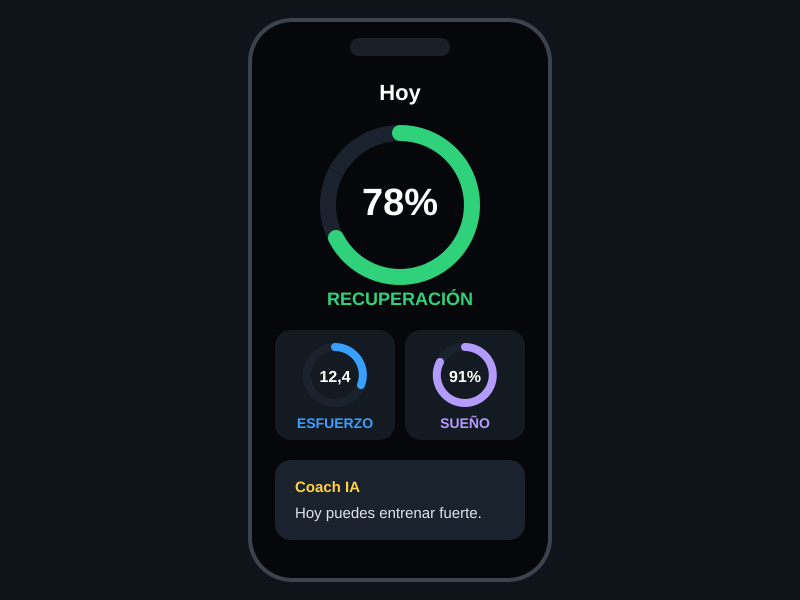
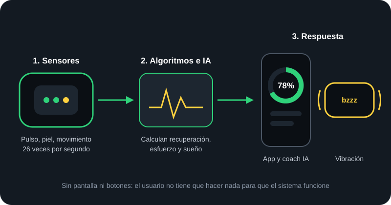
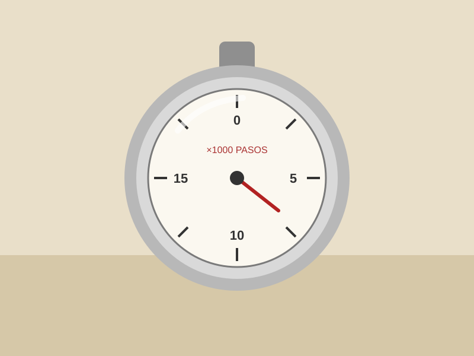
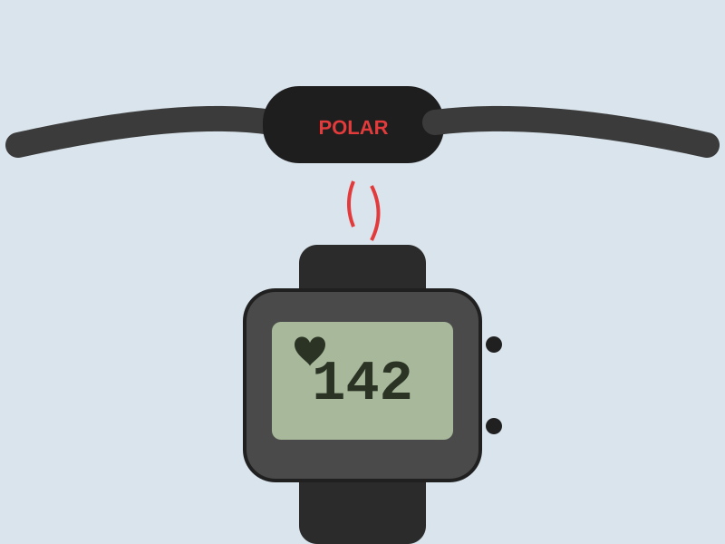
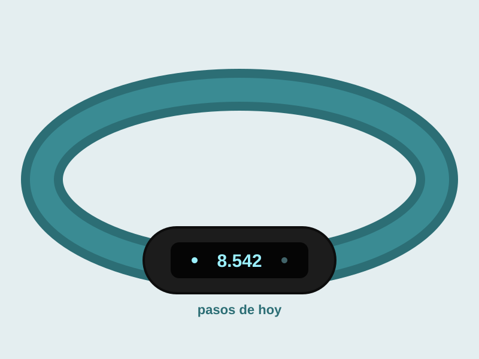
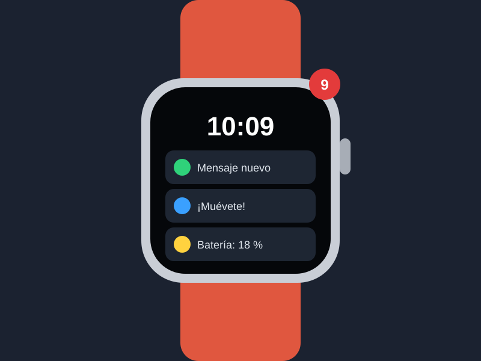

Interacción implícita
El usuario no tiene que hacer nada: la pulsera registra el sueño, el pulso y la actividad sola. La entrada de datos es el propio cuerpo.
Dispositivo de interacción · 2025-2026
Una pulsera sin pantalla y sin botones que te mide las 24 horas del día y se comunica contigo mediante vibraciones, una app y un entrenador con inteligencia artificial.
WHOOP es una pulsera de monitorización de la salud y el rendimiento creada por la empresa estadounidense del mismo nombre. Su última generación, WHOOP 5.0 (y su versión médica, WHOOP MG), se presentó en mayo de 2025.
Lo que la hace especial desde el punto de vista de la Interacción Persona-Ordenador es su planteamiento: no tiene pantalla ni botones. En lugar de pedir constantemente la atención del usuario, como un reloj inteligente, recoge datos del cuerpo de forma automática y solo se comunica cuando aporta algo útil: con una vibración en la muñeca, con tres puntuaciones claras en el móvil o respondiendo preguntas en un chat con inteligencia artificial.

La Interacción Persona-Ordenador no solo estudia cómo damos órdenes a las máquinas, sino también cómo nos devuelven la información sin abrumarnos. WHOOP es un buen ejemplo de interacción implícita y de «tecnología tranquila»:
El usuario no tiene que hacer nada: la pulsera registra el sueño, el pulso y la actividad sola. La entrada de datos es el propio cuerpo.
Al no tener pantalla, no hay notificaciones que reclamen tu atención cada pocos minutos. Consultas los datos solo cuando tú quieres.
Te despierta con una vibración en el momento más adecuado de tu ciclo de sueño, sin ruido y sin molestar a quien duerme a tu lado.
Miles de datos se resumen en tres puntuaciones (recuperación, esfuerzo y sueño) con colores tipo semáforo. Reduce la carga cognitiva.
Su entrenador con inteligencia artificial responde preguntas escritas como «¿por qué he dormido mal?» usando tus propios datos.
El sensor se puede llevar en la muñeca, en el bíceps o en ropa especial, según la actividad. El dispositivo se adapta a la persona, y no al revés.
El sensor ilumina la piel con pequeños LED y mide cómo cambia la luz reflejada con cada latido (fotopletismografía). Junto con la temperatura de la piel y el movimiento, esos datos se envían al móvil, donde los algoritmos los convierten en recomendaciones.

| Qué quieres hacer | Cómo se hace | Tipo de interacción |
|---|---|---|
| Registrar sueño, pulso y actividad | Automáticamente, solo con llevarla puesta | Implícita |
| Despertarte | Vibración en la muñeca en el mejor momento del sueño | Háptica (salida) |
| Apagar la alarma o ver la batería | Dar dos toques sobre el sensor | Gesto táctil |
| Consultar tus datos | Puntuaciones con colores en la app del móvil | Visual |
| Resolver dudas o pedir un plan | Escribir una pregunta al entrenador con IA | Conversacional |
| Hacerte un electrocardiograma | Tocar con dos dedos el cierre de la pulsera (WHOOP MG) | Contacto directo |
Medir el cuerpo con un aparato que llevamos encima no es nuevo. Lo que ha cambiado es cómo nos relacionamos con él: de leer un número a recibir consejos personalizados sin tener que mirar nada.

En Japón se populariza el podómetro para contar pasos. Solo mide una cosa y hay que mirarlo para saber el resultado; no interpreta nada.

La finlandesa Polar lanza el primer pulsómetro inalámbrico, con una banda en el pecho y un reloj. Es preciso, pero incómodo, y solo se usa durante el entrenamiento.

Fitbit acerca la medición al gran público: pasos, calorías y sueño sincronizados con el ordenador. Aun así, los datos son básicos y el usuario tiene que interpretarlos.

Llegan los relojes inteligentes, con pantalla táctil y muchas funciones. Miden mucho, pero también interrumpen mucho, y la batería apenas dura un día.
Va en la dirección contraria: quita la pantalla, alarga la batería hasta unas dos semanas y deja que la inteligencia artificial interprete los datos y te explique qué hacer con ellos.
| Dispositivo anterior | Su limitación | Mejora de WHOOP |
|---|---|---|
| Podómetro | Mide un solo dato y no lo interpreta | Combina muchas señales y da recomendaciones |
| Pulsómetro con banda de pecho | Incómodo y solo se usa al entrenar | Mide las 24 horas, incluido el sueño, sin molestar |
| Pulsera de actividad | Datos básicos que el usuario debe entender solo | Puntuaciones claras y explicaciones en lenguaje natural |
| Reloj inteligente | Notificaciones constantes y poca batería | Sin pantalla que distraiga y unas dos semanas de batería |
| Despertador sonoro | Suena a una hora fija y despierta a otros | Vibración silenciosa en el mejor momento del sueño |
| Fabricante | WHOOP (Boston, EE. UU.) |
|---|---|
| Modelos | WHOOP 5.0 y WHOOP MG (versión médica) |
| Presentación | 8 de mayo de 2025 |
| Pantalla y botones | No tiene |
| Batería | Hasta unos 14 días |
| Tamaño | Un 7 % más pequeña que WHOOP 4.0 |
| Funciones de salud | Electrocardiograma con aprobación de la FDA, estimación de la presión arterial y edad fisiológica |
| Precio | Suscripción anual de 199 $, 239 $ o 359 $, con la pulsera incluida |